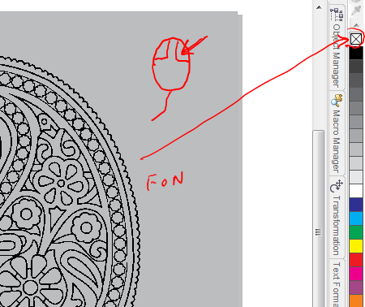
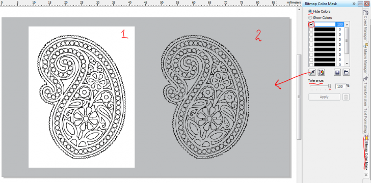

ВОПРОС / ОТВЕТ ДЛЯ НАЧИНАЮЩИХ
polzovatel-902 / 13.07.2010, 09:21/00:41
Форум:
Объясню на примере, чтоб было понятней... Открываю в кореле картинку (футболку с надписью) в формате JPG, мне нужно вытянуть из футболки надпись, т.е разъеденить файл... Говорят нужно формат изменить, еще что-то... Объясните, пожалуйста, что нужно сделать для этого...? Заранее спасибо.
80% текста можно было не писать, нас мотивации и история совершенно не интересует. Вас спросили что вы имеете виду под "масками", а точно ответа так и нет! Обтравочные пути что ли, которые в jpg, обтравленная шейпом картинка в Кореле, поверклип или что? Единственное что понятно, так это то, что речь идёт о прозрачности. Есть куча форматов которые поддерживают её. Например PNG, PSD.
Как вариант, выложите файл с тем что у вас есть в Кореле, что бы было понятно о чём речь.
svonar,
1. Было бы не плохо увидеть кусок файла.
2. Избавиться от фона или от цветовой маски (такое понятие в корле есть), можно разными путями, но каждый способ имеет свои недостатки.
3.Если у Вас узоры, то лучше их обрисовать.
Вот два способа (повторюсь обрисовать будет лучше):
1. Конвертировать изображение в Black and White 1200dpi (затем убрать фон)
Этоим способом хорошо делать подписи, так-как затем можно перекрашивать как фон так и саму подпись в любой цвет.

2. Воспользуйся Bitmap Color Mask

3. Ну и Трасировка
капец, как оказывается много можно слов сказать и ни одного по делу...
вобщем товарищу нужен либо учебник по корелу, причем хватит и первой трети. можно не покупать, а прочитать за пару часов в читальном зале библиотеки.
либо обратиться в учебный центр каких полно, и там за тортик ему улыбчивые преподавательницы корела расскажут на какие три кнопки (ему больше и не надо!) надо нажимать. ну или пусть денег им заплатит, вдруг они за фигурой следят :D
Des425, в окошке трассировке вроде испокон веков была галка "убирать фон" или что то вроде, тоесть вот этого прямоугольника и не делалось даже.
mmgs, (относиться к первому комментарию)
Перед тем как написать, укажи кому обращаешься.
Эта тема специально сделано для новичков. (А другие могут найти для себя что-то новое)
Учебный центр нефига, а вот книга поможет.
Ребята,благодарю за помощь,..хоть и с перцем!Sanco,файлы у меня примерно такие,как в исчерпывающем ответе Des425,низкий ему поклон и за помощь и за поддержку. Молодой человек посетовал на многословие но несмотря на это внимательно не прочел...
Всем искренняя благодарность!Храни Вас Бог!!!
Звонарь.
Приветствую всех участников сего форума.
Прошу ответить знающих людей. Мне нужно, чтобы CorelDraw (X5), при инициировании (нажатием соответствующей кнопки) создания нового пустого документа, открывал пустой лист изначально не белого, а бледно-желтого цвета. Менял цвет ручками, сохранял "как настройки по умолчанию" - сохраняется всё что угодно, но только не новый цвет листа. Может можно это прописать в каком-то конфигурационном файле? Заранее спасибо всем, кто сможет ответить.
Captain777, 1. включи запись нового макроса
2. создай документ нужного пресета
3. задай цвет фона
4. останови запись макроса.
Вот тебе и кнопка, останется только вытащить её на панель или назначить клавишу
Спасибо за совет. Только, если честно, я пока не въехал, как из записанного макроса создать кнопку, аналогичную кнопке NEW (Ctrl+N).
Captain777, читай, всё уже давно есть.
Страницы